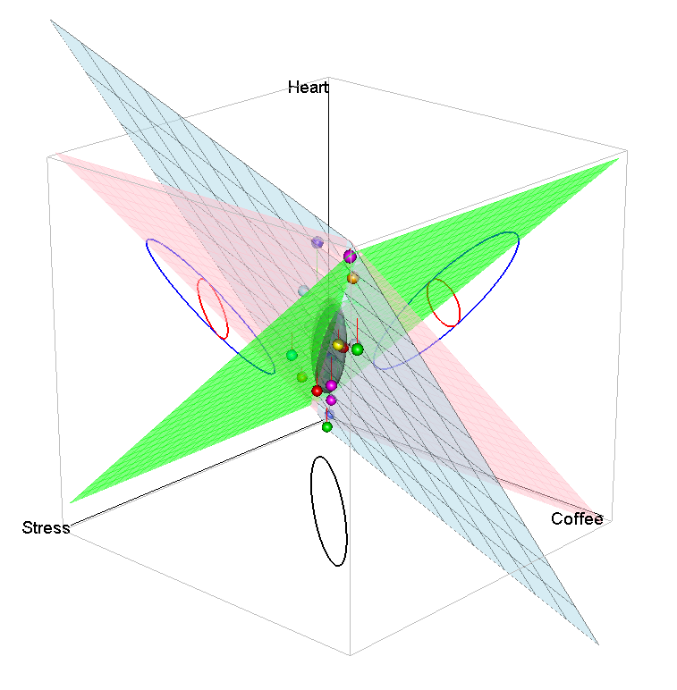
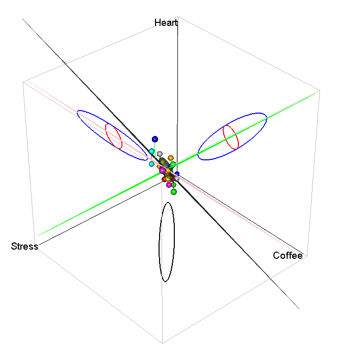
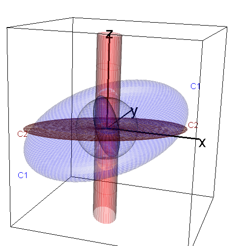
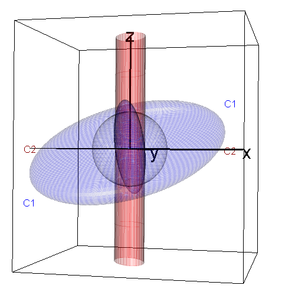

The table below shows thumbnails of the figures together with the name of the corresponding SAS or R source file.
 |
 |
| Standard view, showing regression planes | AV plot view, showing regression planes on edge |
 |
 |
| C2 is a projection of C1 onto the plane where z=0. | View illustrating orthogonality of each C and its dual, C^{-1}. |